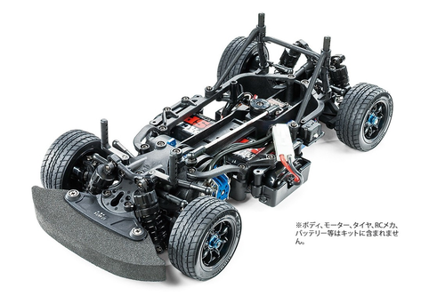

タミヤ M-07 CONCEPT

引用元画像：タミヤ公式サイト
📋 基本情報
| メーカー | タミヤ（Tamiya） |
|---|---|
| 機種名 | M-07 CONCEPT |
| 型番 | シャーシキット |
| 発売時期 | 2017年6月24日 |
| 生産状況 | 生産終了 |
| カテゴリー | ラジコンカー（1/10スケール 電動RCカー） |
| サブカテゴリー | Mシャーシ / 前輪駆動（FWD） |
📏 シャーシスペック
| 全長 | 332mm（バンパーを含む） |
|---|---|
| 全幅 | 164mm |
| ホイールベース | 239mm / 225mm（2タイプ選択可能） |
| フレーム | 上下分割式モノコックタイプ |
⚙️ 駆動系
| 駆動方式 | フロントミドシップモーター・前輪駆動（FWD） |
|---|---|
| デフギヤ | オイル封入式ギヤデフ |
| ギヤレシオ | 7.22:1〜4.81:1の9種類 （キット付属20Tピニオン使用時：5.78:1） |
| モーター | 540タイプ |
🔧 サスペンション
| 形式 | 4輪ダブルウィッシュボーン |
|---|---|
| ダンパー | CVAオイルダンパー |
| ステアリング | 3分割タイロッド式 |
💡 特徴
前輪駆動の軽快な走行性能
- フロントミドシップモーター配置
- 前輪駆動ならではの軽快な走行性能と操縦性を追求
- コンパクトシャーシで室内サーキット向け
整備性にこだわった設計
- 上下分割式モノコックタイプフレーム
- デフギヤの交換は底面からアクセス可能
- 足まわりの分解箇所を極力少なくして整備性向上
セッティング幅の広さ
- ロングサスアーム採用（専用設計）
- リンケージをロング化
- セッティング幅が広く、様々な路面に対応
高性能駆動系
- フルベアリング仕様
- オイル封入式ギヤデフ
- ユニバーサルシャフト使用でロスのない駆動
ホイールベース選択可能
- 239mmと225mmの2タイプが選択可能
- 豊富に揃ったMシャーシ用ボディを選んで搭載可能
🔧 ぽすとそに工房での修理実績
修理難易度
★☆☆☆☆（非常に簡単、初心者でも修理可能）
よくある故障・注意点
- ギヤデフのメンテナンス不足によるデフギヤの摩耗
- CVAオイルダンパーのオイル漏れ
- ベアリングの劣化による回転抵抗の増加
修理のポイント
- ギヤデフは定期的な清掃とグリスアップが必須
- CVAダンパーのOリングを定期的に交換
- ベアリングは定期的にクリーニングと注油
- 底面からデフギヤにアクセスできるため整備が容易
- 初心者でも扱いやすいシンプルな構造
その他の特徴
- 生産終了品のため、パーツ入手が困難な場合がある
- M-08 CONCEPTとの互換パーツもある
- Mシャーシシリーズの中で整備性に優れたモデル
- 前輪駆動の特性を理解すると楽しめる